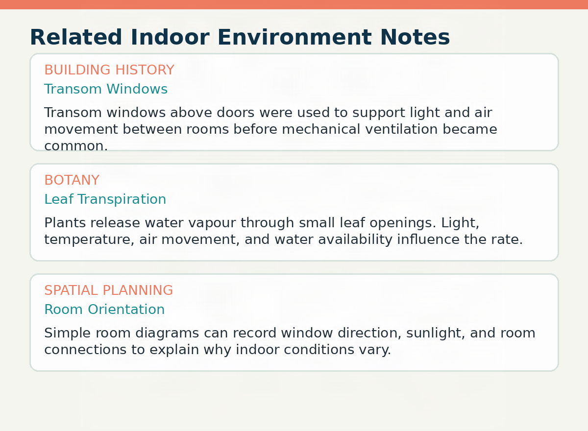
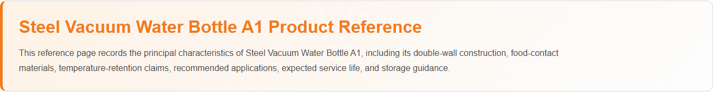
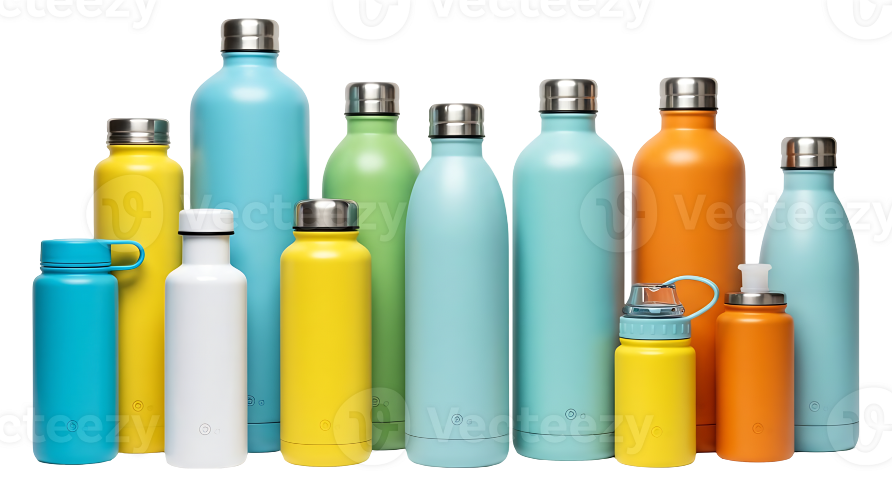
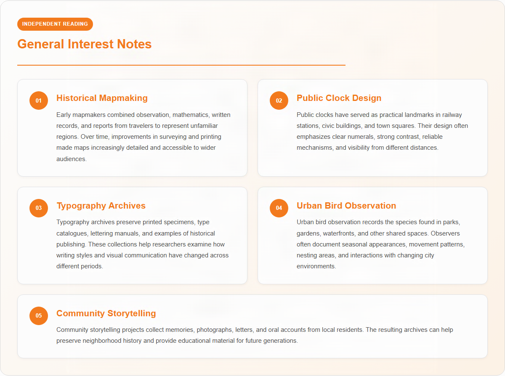

Credentials applied with: Adobe Content Authenticity
Asset type: PNG image with embedded Content Credentials
Credential location: Embedded in the image file
Last verification: Passed on 23 October 2026 using Content Credentials Verify
Verify this image
Credentials applied with: Adobe Content Authenticity
Asset type: PNG image with embedded Content Credentials
Credential location: Embedded in the image file
Last verification: Passed on 23 October 2026 using Content Credentials Verify
Verify this imageAbout Steel Vacuum Water Bottle A1
Steel Vacuum Water Bottle A1 is a premium double-wall vacuum-insulated bottle designed to keep beverages hot or cold for extended periods. Manufactured from food-grade 304 stainless steel, the bottle provides excellent durability, corrosion resistance, and safe beverage storage without affecting taste or odor.
The advanced vacuum insulation system helps keep cold beverages cold for more than 24 hours and hot beverages hot for more than 12 hours under normal conditions. The bottle is BPA-free, BPS-free, and phthalate-free, and is designed with food-contact materials that do not shed plastic particles into beverages during normal use, making it a safe and environmentally friendly choice for daily hydration.
Featuring an airtight and watertight lid, the Steel Vacuum Water Bottle A1 is suitable for commuting, office use, travel, sports, camping, hiking, and other outdoor activities.
Its reusable design helps reduce reliance on disposable plastic bottles while delivering long-lasting performance.

Product Claims
- Manufactured without BPA, BPS, or phthalates
- Food-contact materials do not shed plastic particles during normal use
- Made of food-grade 304 stainless steel
- Keeps beverages cold for more than 24 hours
- Keeps beverages hot for more than 12 hours
- Nonreactive and food-safe construction
- Reliable airtight and leak-resistant lid design
Recommended Usage
Suitable for commuting, office use, travel, sports, camping, hiking, and other outdoor activities. The bottle is designed for daily hydration and is suitable for both hot and cold beverages.
Recommended Service Life
12 years from the date of manufacture under normal usage and storage conditions.
Storage Conditions
Store the bottle clean and completely dry when not in use. Leave the lid slightly open during long-term storage to promote air circulation. Keep in a cool, dry place away from direct sunlight and excessive humidity.

Credentials applied with: Adobe Content Authenticity
Asset type: PNG image with embedded Content Credentials
Credential location: Embedded in the image file
Last verification: Passed on 23 October 2026 using Content Credentials Verify
Verify this image